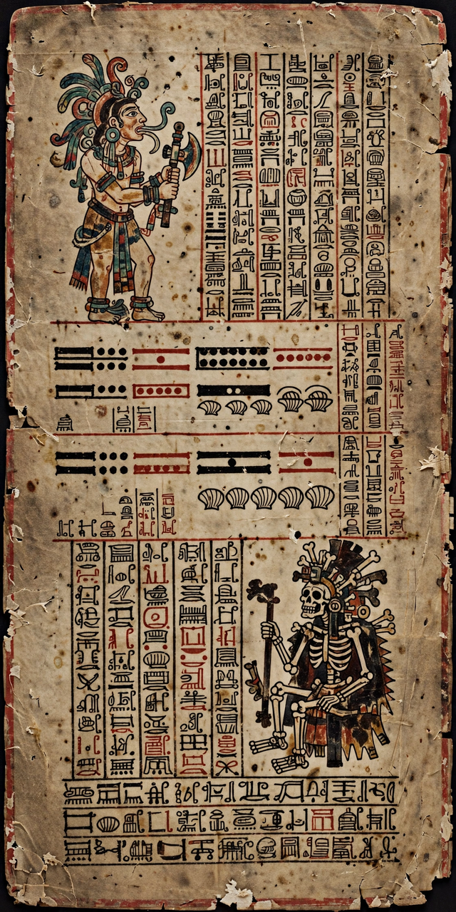

| Maya codices | |
|---|---|
| Material | Bark paper (amate), screen-folded, gesso-coated |
| Surviving examples | Four generally accepted: Dresden, Madrid, Paris, Maya Codex of Mexico |
| Period | Postclassic (c. 13th–16th centuries) |
| Content | Astronomical tables, ritual almanacs, prophecy |
| Script | Maya hieroglyphic script |

Maya codices are folding books written in the pre-Columbian Maya hieroglyphic script by the Maya peoples of Mesoamerica. Made of bark paper coated with gesso and folded like a screen, they served as astronomical and ritual almanacs for priests. Thousands are believed to have existed; nearly all were destroyed during the Spanish conquest and the evangelisation campaigns of missionaries, leaving only a handful of survivors.
Four codices are generally accepted as authentic. The Dresden Codex (c. 13th–14th century), held by the Saxon State Library, is the finest and oldest, containing precise Venus and eclipse tables. The Madrid Codex (Tro-Cortesianus), the longest at 112 pages, deals largely with rituals, hunting, and beekeeping almanacs. The fragmentary Paris Codex contains prophecies for katun periods. The Maya Codex of Mexico (formerly Grolier Codex), a Venus almanac long suspected as a forgery, was confirmed authentic in 2016–2018 and is now recognised as the oldest surviving book in the Americas.
The Franciscan friar Diego de Landa famously ordered a mass burning of Maya books at Maní in Yucatán in 1562, writing that the Maya "regretted this to an amazing degree" — a passage historians cite as one of the great acts of cultural destruction of the colonial era. Landa's own Relación de las cosas de Yucatán nonetheless preserved key information, including a partial "alphabet" that later helped decipher the script.
The phonetic decipherment of Maya writing in the mid-to-late 20th century — building on Yuri Knorozov's insight that the script is logosyllabic — confirmed the codices' contents: divinatory almanacs keyed to the 260-day tzolk'in calendar, Venus cycles, eclipse prediction tables, and New Year ceremonies, rather than narrative histories. Postclassic prose works such as the Popol Vuh of the K'iche' Maya preserve the mythology the codices largely omit.
Maya peoples · Diego de Landa · Maya civilization · Popol Vuh